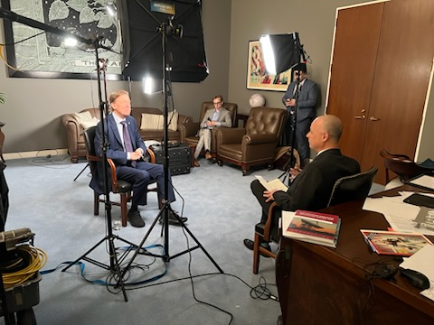
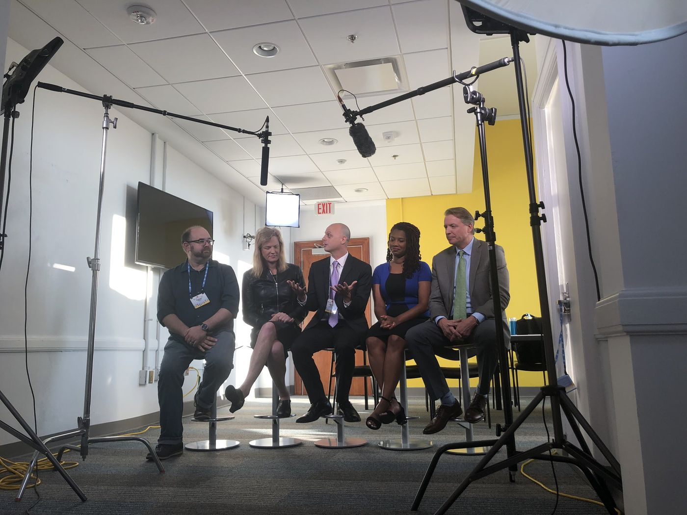

Watch & listen
Talks, forums, and interviews
In 2026 I interviewed U.S. Senator John Hickenlooper on camera for the national relaunch of the Kauffman Indicators of Entrepreneurship, and built the briefing and interview protocol for former SBA Administrator Isabel Guzman. The video opened the launch event as its keynote.

In the room


More video
Most of these play right here. Hold Ctrl or Cmd when you click to open YouTube instead.

TalkThe Future of Work, Entrepreneurship, and Access to OpportunityA solo presentation for Missouri Humanities · 2021

ModeratorLeaders Talk Economic Growth and DevelopmentESHIP Summit, Kauffman · 2019

ForumFuture of Work and Access to OpportunityKauffman forum with the Upjohn Institute · 2021

ForumData Dive: Indicators of EntrepreneurshipKauffman Entrepreneurship Issue Forum · 2022
The5 Podcast: AI and NonprofitsSpotify · 2024. Audio only, so the hand gestures were wasted.
Listen
More Kauffman Entrepreneurship Issue Forums2 · 2021 to 2022
NextThe Lab